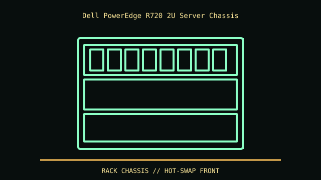

[ IDENTIFIED ENCLOSURE // DELL POWEREDGE R720 (NOT R720XD) ]
Dell PowerEdge R720 2U Server Chassis
87.3 × 444 × 754 mm (H × W × D), 2U chassis; rail/cable-management arm and bezel add installation depth. Maximum mass depends on drives and PSU.

REVISION / FIT CAVEAT: Do not conflate R720 with R720xd; drive count, chassis depth and backplanes differ. Identify service tag, front bezel, backplane, riser and midplane labels.
Model-specific mechanical record
| Catalog leaf | Rack server enclosures |
|---|---|
| Identity / generation | Dell PowerEdge R720 (not R720xd) |
| Dimensions / clearance | 87.3 × 444 × 754 mm (H × W × D), 2U chassis; rail/cable-management arm and bezel add installation depth. Maximum mass depends on drives and PSU. |
| Drive bays / mounts | R720 options include 8- or 16-bay 2.5-inch hot-plug front chassis or an 8-bay 3.5-inch version; backplane/controller determine SAS/SATA support. R720xd is a different, deeper drive-rich chassis. |
| Board / chassis compatibility | Dell-specific system board, redundant PSU, fan bank and riser cards. PCIe width/height/length depends on riser assembly and power configuration; use rack rails listed for R720. |
| Revision identification | Do not conflate R720 with R720xd; drive count, chassis depth and backplanes differ. Identify service tag, front bezel, backplane, riser and midplane labels. |
Compatibility and preservation
Dell-specific system board, redundant PSU, fan bank and riser cards. PCIe width/height/length depends on riser assembly and power configuration; use rack rails listed for R720.
Label hot-swap carriers by bay before removal and preserve rail kits and cable arm as matched accessories. Follow Dell safety rules for fans, PSUs and service while powered.
Before transfer or restoration, photograph the complete model label, assembly/board revisions, bay/backplane identifiers and included accessories. Measure the actual specimen when planning installation or shipping; nominal envelope figures may exclude protruding feet, rails, doors or cables.
Manufacturer manuals and archival sources
- Dell PowerEdge R720/R720xd Technical Guide — DellModel-specific manufacturer specification, service manual, or technical reference used for the listed dimensions and mechanical configuration.
- Dell PowerEdge R720 manuals — Dell SupportSupplemental model documentation or institutional/technical archival record; use the exact product code and manual revision for a specimen.
Listings distinguish base configuration from optional drive, PSU, fan, rack and accessory kits. Do not combine maximum capacities if cages or components occupy the same volume.